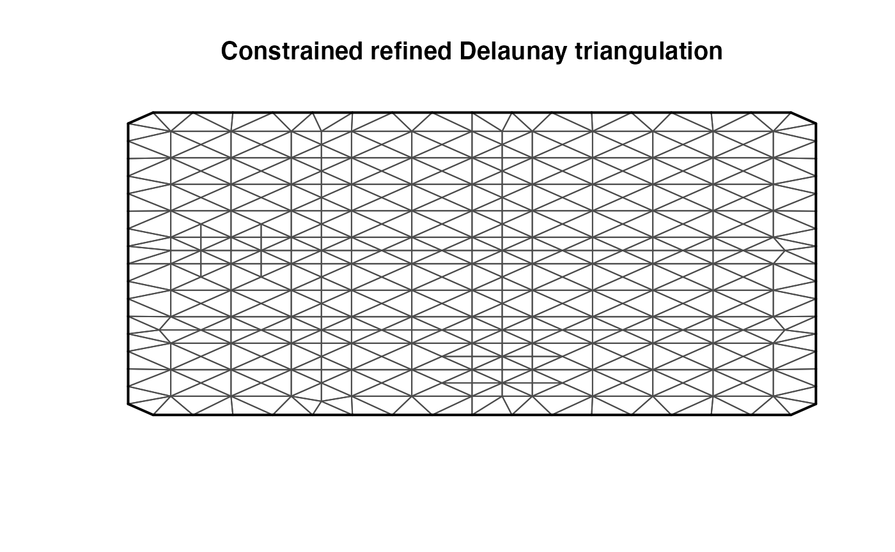

rSPDE packagevignettes/rspde_cov.Rmd
rspde_cov.Rmd##Introduction
In this vignette, we will show how to perform likelihood based parameters estimation in practice by covariance-based rational SPDE approach. The following model will be considered: \[\textbf{y}\vert\textbf{X} \sim N(\overline{\textbf{A}}\textbf{X},\textbf{Q}^{-1}_{\pmb{\epsilon}})\] \[\textbf{X} \sim N(\textbf{0},\textbf{Q}^{-1})\] \(y\) is the observed data, \(X\) is the latent Gaussian random field. Recall that in vignette ######(cite the rspde_inla.Rmd vignetter), we introduced the projector matrix \(\overline{\textbf{A}}\) and the precision matrix \(Q\) in the section ‘Covariance-based rational SPDE approach’.
We will first show how one can simulate the latent filed \(X\) so that we can construct the random field \(u\)(which gives the observed data by adding measurement error) governed by the SPDE \[L^{\alpha/2}(\tau u) = \mathcal{W}\] \(L = -\Delta +\kappa^2 I\) and \(\mathcal{W}\) is the standard Gaussian white noise. \(\alpha = \nu + d/2\), \(d\) is dimension of the computational domain. \(\nu\), \(\kappa\) and \(\tau\) are the three parameters we want to estimate. In this vignette, we assume all of the parameters are fixed. With the simulated data, we will illustrate how to construct the log-likelihood and then use ‘optim’ function in R to obtain our estimated parameters.
##Simulation
The two matrix \(A\) and \(Q\) introduced from the vignette ###(cite old vignette), especially the matrix Q, play important roles in the simulation. Due to the sparsity of \(Q\), to sample the field \(X\), we can exploit the standard method from ###(cite section 2.3 of GMRF book). Namely, we can do Cholesky factorization of Q: \[ Q = L^TL\] and generate a standard Gaussian vector \(Z\), then \(X = L^{-T}Z\) follows the distribution \(N(0,Q^{-1})\). To get the field \(u\), we can simply compute the multiplication: \(u = AX\). To get the observed data \(y\), we just add some noise, say, a Gaussian random vector with zero mean and diagonal covariance matrix.
Now, let us see how to simulate the data with rSPDE package. First, we load INLA package and rSPDE package.
library(INLA)## Loading required package: Matrix## Loading required package: foreach## Loading required package: parallel## Loading required package: sp## This is INLA_21.12.01 built 2021-12-01 04:58:25 UTC.
## - See www.r-inla.org/contact-us for how to get help.
## - To enable PARDISO sparse library; see inla.pardiso()##
## Attaching package: 'rSPDE'## The following object is masked from 'package:stats':
##
## simulateSecond, we use INLA package to create mesh and obtain relevant finite element matrices: lumped mass matrix, stiffness matrix and projector matrix.
N_FE = 10+1
# generate coordinates of mesh, the code is from Alex's tutorial
idx <- seq(0,1,1/(N_FE-1))
loc_2d_mesh <-lapply(1:length(idx),function(i){cbind(idx[i],idx)})
loc_2d_mesh <- do.call(rbind, loc_2d_mesh)
# using INLA to generate mesh base on coordinates
mesh_2d <- inla.mesh.2d(loc = loc_2d_mesh,max.edge = 0.1)
fem_mesh_2d <- inla.mesh.fem(mesh_2d)
plot(mesh_2d)
# lumped mass matrix
C = fem_mesh_2d$c0
# stiffness matrix
G <- fem_mesh_2d$g1
A = inla.spde.make.A(mesh=mesh_2d, loc=loc_2d_mesh) Third step, set the true parameters. We can call the built-in function ‘CBrSPDE.matern.operators’ from rSPDE package to incorporate all the necessary information like true parameters and relevant finite element matrices into the object operator_information for future use. For example, the simulation task will take information from this object.
nu = 1
kappa = 20
sigma2_spde = gamma(nu)/(gamma(nu+0.5)*(4*pi)^(0.5)*kappa^(2*nu))
tau = sqrt(sigma2_spde)
d = 2
operator_information = CBrSPDE.matern.operators (C,
G,
nu,
kappa,
tau,
m=2,
d)Finally, we can directly call the ‘simulate’ method to get latent field \(X\), then to compute observed data sim_data.
##Computation of log-likelihood function
Given the model from the Introduction section, we can derive the posterior distribution for latent field \(X\):\[\textbf{X}\vert\textbf{y} \sim N(\pmb{\mu}_{\textbf{X}\vert\textbf{y}},\textbf{Q}^{-1}_{\textbf{X}\vert\textbf{y}})\] where \[\pmb{\mu}_{\textbf{X}\vert\textbf{y}}=\textbf{Q}^{-1}_{\textbf{X}\vert\textbf{y}}\overline{\textbf{A}}^T\textbf{Q}_{\pmb{\epsilon}}\textbf{y}, \quad \textbf{Q}_{\textbf{X}\vert\textbf{y}}=\overline{\textbf{A}}^T\textbf{Q}_{\pmb{\epsilon}}\overline{\textbf{A}}+\textbf{Q}\label{posterior}\] \(\textbf{Q}_{\pmb{\epsilon}}\) is precision matrix for measurement error.
With this, we can derive the marginal log-likelihood of observed data \(y\): \[ \pi(y|\nu,\kappa,\tau) \propto \log{|\textbf{Q}|}+\log{|\textbf{Q}_{\pmb{\epsilon}}|}-\log{|\textbf{Q}_{\textbf{X}\vert\textbf{y}}|}-\pmb{\mu}_{\textbf{X}\vert\textbf{y}}^T\textbf{Q}\pmb{\mu}_{\textbf{X}\vert\textbf{y}}-(\textbf{y}-\overline{\textbf{A}}\pmb{\mu}_{\textbf{X}\vert\textbf{y}})^T\textbf{Q}_{\pmb{\epsilon}}(\textbf{y}-\overline{\textbf{A}}\pmb{\mu}_{\textbf{X}\vert\textbf{y}})\] To estimate parameters, the only thing left is to find the maximum of this log-likelihood function.
To see how can we do it with rSPDE package, we can call the built-in function ‘CBrSPDE.matern.loglike’ to evaluate log-likelihood. To find the maximum, we can use the R built-in function ‘optim’. We define the following ‘loglike_matern’ function to allow ‘optim’ try different choice for each parameters. In this ‘loglike_matern’ function, we put all the input parameters in log-scale and use exp() to scale back to prevent negative values for \(\nu\) and \(\kappa\) and zero value for \(\tau\). The function ‘loglike_matern’ will output negative log-likelihood due to ‘optim’ function minimize functions by default.
loglike_matern = function(parameters){
mynu = exp(parameters[3])
mykappa = exp(parameters[2])
mytau = exp(parameters[1])
loglike = CBrSPDE.matern.loglike(object=operator_information, Y = sim_data, A=A, sigma.e=0.1,user_nu = mynu, user_kappa = mykappa, user_tau = mytau)
loglike = as.numeric(loglike)
return(-loglike)
}With ‘loglike_matern’ function, we can now call ‘optim’ function to perform optimization. Users can use the built-in function ‘get.inital.values.rSPDE’ from rSPDE package to get a good initialization for the optimization. This may help reduce the amount of time for optimization.
# set initial nu,kappa and tau for optimization
initial_para = get.inital.values.rSPDE(mesh=mesh_2d) #Notice that it will return in log scale.
# let it rip!
timestart<-Sys.time()
s<-optim(initial_para,loglike_matern)
timeend<-Sys.time()
runningtime<-timeend-timestart
print(runningtime)## Time difference of 24.64741 secs## [1] 0.1078284 16.0236604 0.6338765In order to speed up the optimization, users may also choose the parallel optimization option. In this option, we use the R built-in function ‘optimParallel’. Here we can see ‘optimParallel’ is much more efficient and achieve the same result.
ADD THE CODE HIA